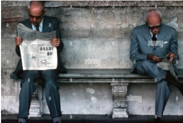
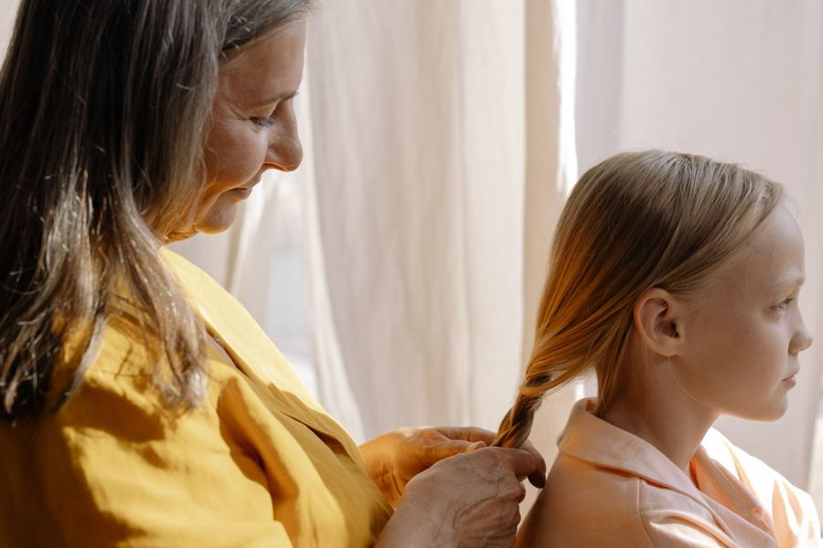

Aptis Speaking Test 12
Part 1: In this part, I am going to ask you three short questions about yourself and your interests. You will have 30 seconds to reply to each question.
There are four people in my family; my husband, my children and me. My husband is a doctor. He worked for a hospital in Hanoi. My children are little. My husband often works long hours at the hospital, but he always tries to spend time with us on weekends. I feel proud of him and grateful for our happy family.
Last week I visited my best friend. She is living in Ho Chi Minh City. It’s a long time I hadn’t seen her. We talked for hours. We were so happy . We went to a small restaurant nearby and shared a lot of old memories. I hope to visit her again soon.
My first school was Hai Ba Trung school. It was small but beautiful. I really like it. My teachers were friendly and kind. My friends were helpful. I still remember playing games with my classmates during break time. Sometimes I meet my old friends from that school and we talk about those days.
Part 2: In this part, I'm going to ask you to describe a picture. Then I will ask you two questions about it. You will have 45 seconds for each response.
 |
|
|---|---|
To fight out about the news, I read newspaper or watch television. Also, I update information on Facebook. I usually check the news every morning before going to work. It helps me know what is happening around the world.
It is important to read about the news every day because we can update the information and stay active. For example, knowing about the weather helps me plan my day better. It also helps me avoid missing important events.
Part 3: In this part, I'm going to ask you to compare two pictures, and I will then ask you two questions about them. You will have 45 seconds for each response.
The two pictures show people in different places
There are some differences between the two pictures. Picture 1 shows a family on the road while picture 2 shows a man at home. The people in picture 1 are taking a photo and they look happy but the man in picture two is writing something. He looks serious
There are some similarities between the two pictures. The people in both picture are wearing casual clothes. They are trying to keep their memories. Both pictures show ordinary moments that people want to remember forever. I think keeping memories, whether by photo or by writing, is very meaningful.
I prefer recording memories by picture because they can remember everything clearly. For example, I often look back at old photos when I miss my family. They help me remember small details I would otherwise forget.
People like taking photos with their mobile phones because it is fast and easier. Also, they can share photos with their friends or post their Facebook. I usually take photos during trips or family gatherings. It is a simple way to keep beautiful moments close to me.
Part 4: In this part, I'm going to show you a picture and ask you three questions. You will have one minute to think about your answers before you start speaking. You will have two minutes to answer all three questions.

1. Tell me about a time you were with someone older or younger than you.
Last week, I returned to my hometown after working in Hanoi for several months. I spent a day with my grandmother and we had a lot of beautiful memories.
She shared stories about her youth with me while teaching me how to make traditional cake. I love her a lot. I felt really grateful for the time we spent together. It reminded me how important family memories are.
2. How do you feel in the situation?
3. How do you think different generations can learn from each other?